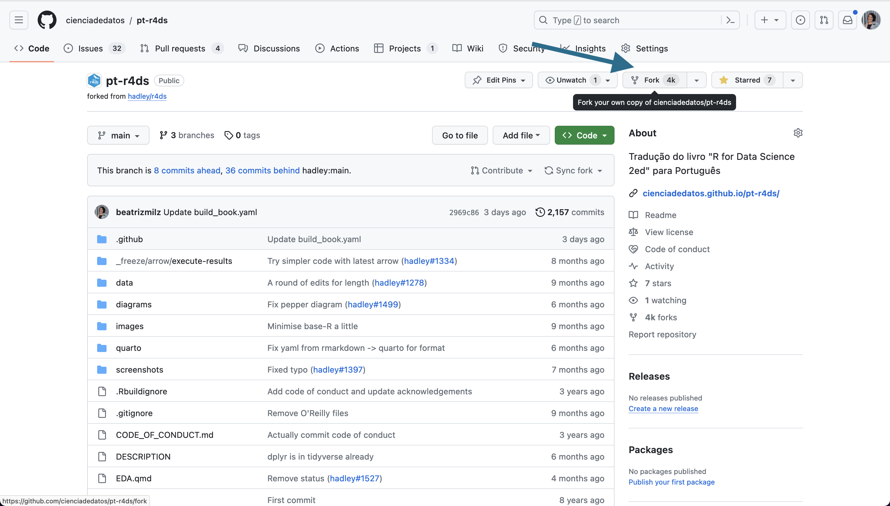

5 Preparando o GitHub para realizar a tradução
Nesta seção, apresentaremos os passos necessários para realizar a tradução de um capítulo.
É importante citar que, neste ponto, é importante que você já tenha se apresentado para a pessoa responsável pela equipe de tradução e esteja em contato com a equipe!
Neste caso, utilizaremos como exemplo a tradução do livro R4DS, porém esperamos que este guia seja útil para outras traduções futuras.
É importante que você faça login na sua conta do GitHub para realizar os próximos passos.
5.1 Fazer um fork do repositório
O primeiro passo a ser realizado é criar um fork do repositório do livro que você deseja traduzir, para que você possa realizar as alterações necessárias na sua conta, e posteriormente enviar sua contribuição.
Isso é necessário ser realizado apenas uma vez, ao iniciar suas atividades em um projeto de tradução!
Caso você não saiba o que é um fork, recomendo voltar na Seção 4.4 e conferir a lista de conceitos importantes.
Para realizar o fork, acesse o repositório do livro que você deseja traduzir e clicar no botão Fork:

Então, você será redirecionado para uma pagina para você confirmar a criação do seu fork. É importante que em “Owner” esteja selecionada a sua conta do GitHub, e que a opção “Copy the main branch only” não esteja selecionada:

Então, você será redirecionado para a página do seu fork, que estará localizado na sua conta do GitHub:

5.2 Escolhendo o ambiente para traduzir
Após criar o fork, você pode realizar a tradução no seu computador (localmente) ou utilizando o GitHub Codespaces (online).
No caso da tradução no seu computador (localmente), vamos apresentar exemplos utilizando a IDE RStudio. Caso você não use o RStudio e prefira utilizar outro editor de texto, você pode seguir os passos gerais no seu editor preferido.